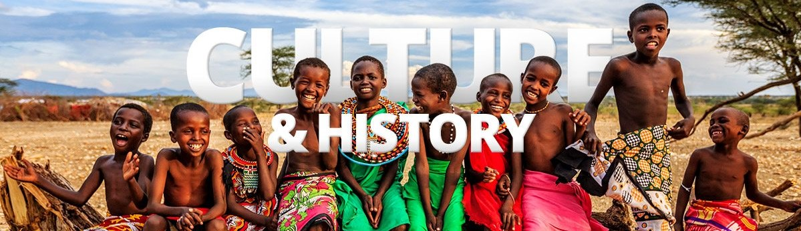

A Save Africa é uma organização não governamental internacional dedicada a promover o
desenvolvimento sustentável e o bem-estar humano na África. Acreditamos que a África tem um
potencial imenso e que, com o apoio adequado, pode alcançar um futuro próspero e pacífico.
Nossa missão é trabalhar em parceria com comunidades locais, governos e outras organizações para implementar projetos que abordem desafios
urgentes enfrentados pela África, como pobreza, fome, doenças, falta de acesso à educação e infraestrutura inadequada.